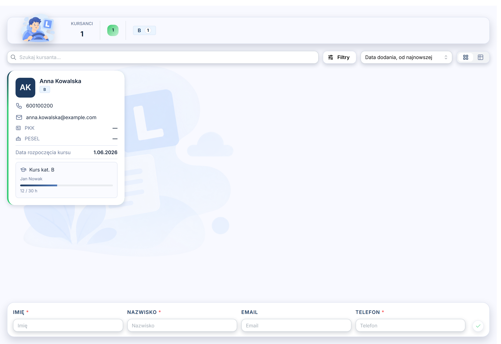
Lista kursantów
Kontakt, PKK, data rozpoczęcia i postęp kursu widać od razu. Filtry, sortowanie, widok kart albo tabeli.
Aplikacja dla ośrodków szkolenia kierowców
Grafik, kursanci, instruktorzy, pojazdy i rozliczenia. Właściciel, biuro, instruktor i kursant logują się do tej samej aplikacji, każdy do swojego widoku.
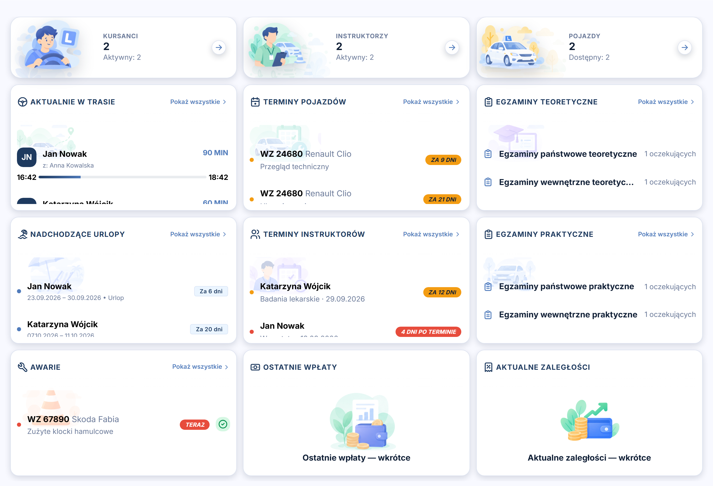
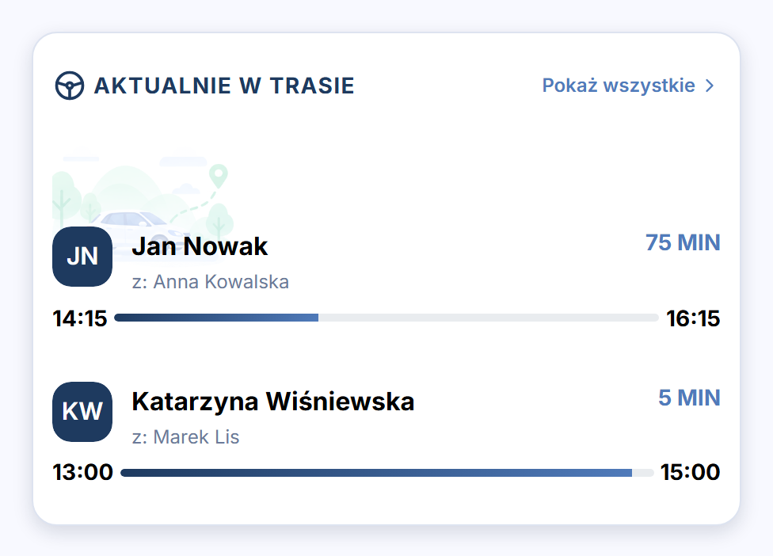
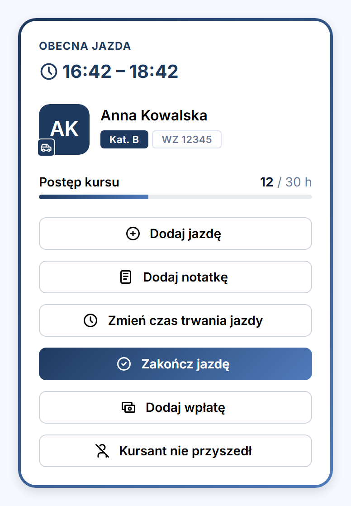
Pulpit właściciela: kto jest teraz w trasie, którym autom kończy się przegląd, kto czeka na egzamin.
Grafik
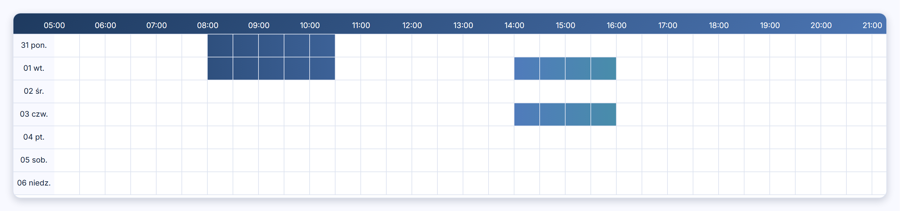
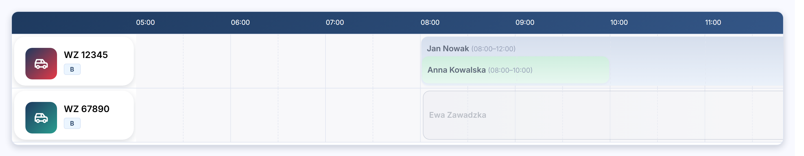
Droga kursanta
Jedna osoba, sześć ekranów. Przewijaj dalej, a przejdziemy razem z nią przez całą aplikację.

Kontakt, PKK, data rozpoczęcia i postęp kursu widać od razu. Filtry, sortowanie, widok kart albo tabeli.
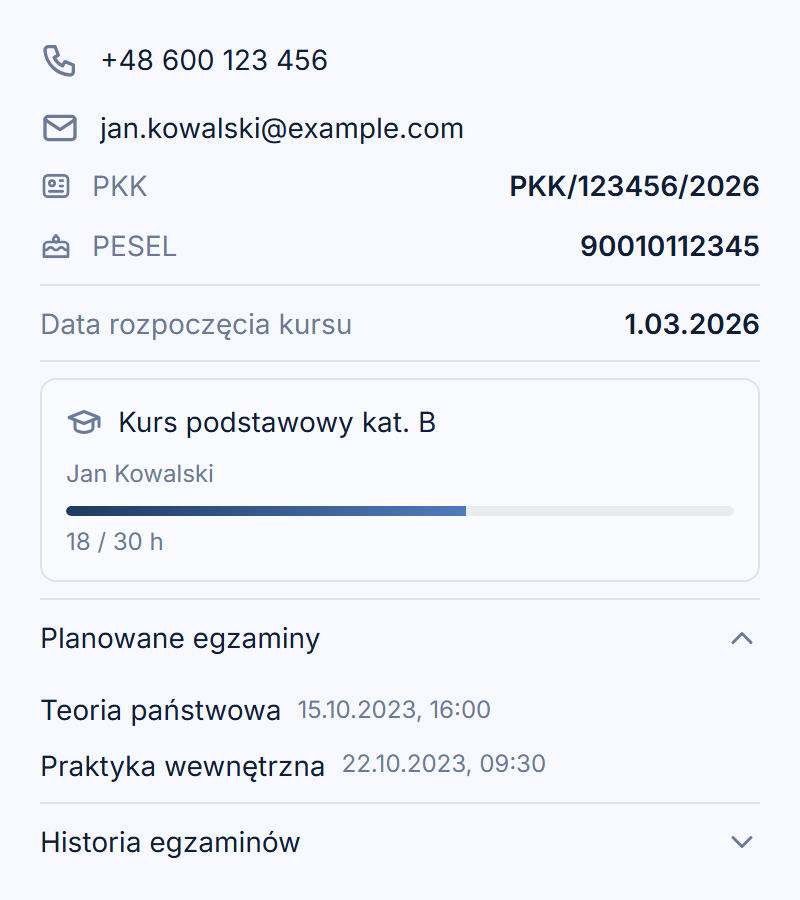
Kliknięcie otwiera szczegóły: dane formalne, kurs z licznikiem godzin, zaplanowane egzaminy.
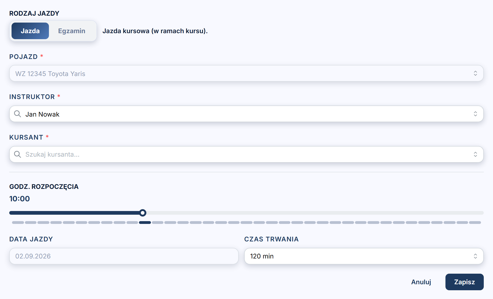
Pojazd, instruktor, godzina na suwaku i czas trwania. Jazda albo egzamin, w jednym formularzu.
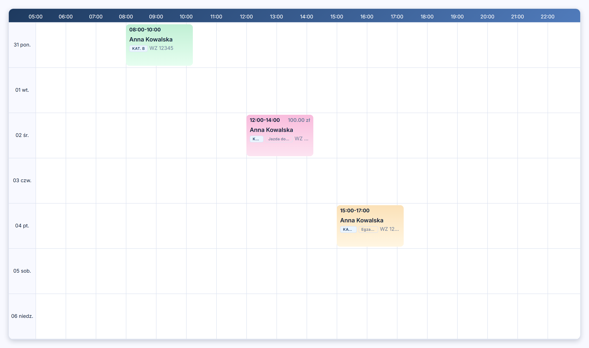
Jazda ląduje w tygodniowym kalendarzu kursanta i instruktora, z kategorią i pojazdem.
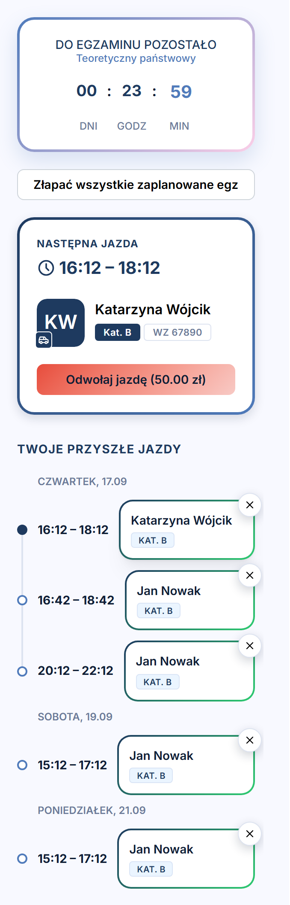
Kursant widzi swoją najbliższą jazdę i może ją odwołać, z podanym kosztem.
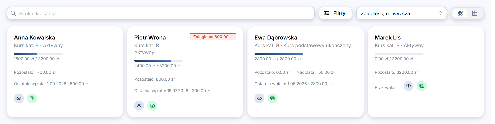
Wpłaty, pozostała kwota i zaległości każdego kursanta, bez zeszytu kasowego.
Jedna kursantka. Jeden system.
Zaloguj sięInstruktor
Kursant, auto, postęp kursu. Zakończenie jazdy, notatka, wpłata albo nieobecność: jednym dotknięciem, między jazdami.
Pasek tygodnia i lista jazd na wybrany dzień, z kategorią i rodzajem jazdy.
Numer uprawnień, badania lekarskie i warsztaty z datą ważności. Pulpit przypomni, zanim termin minie.
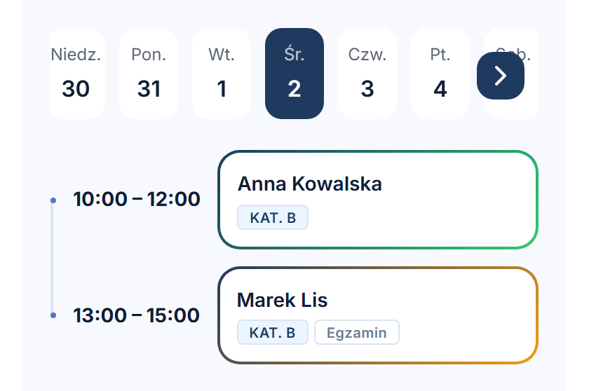
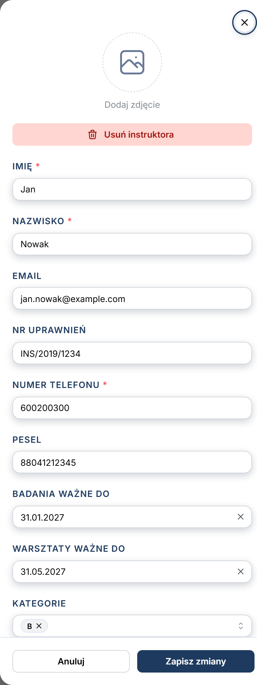
Flota
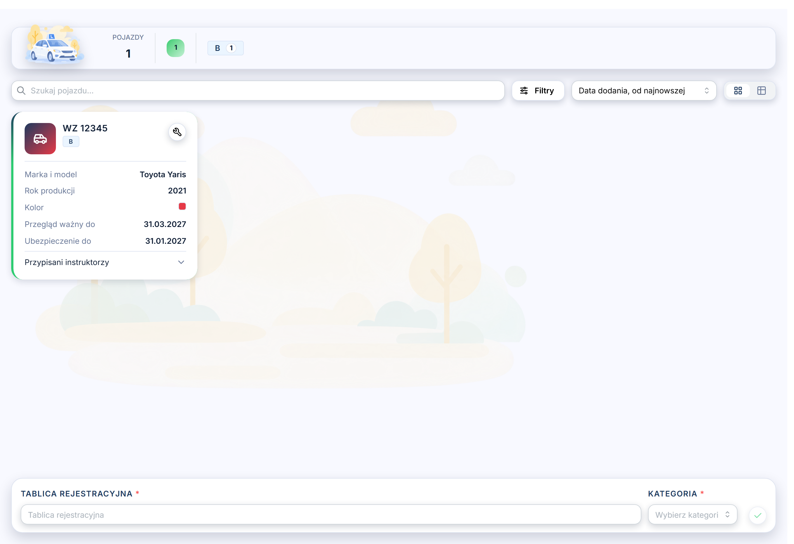
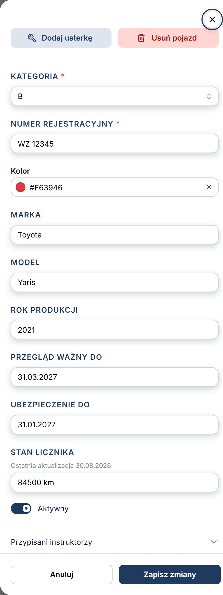
Finanse
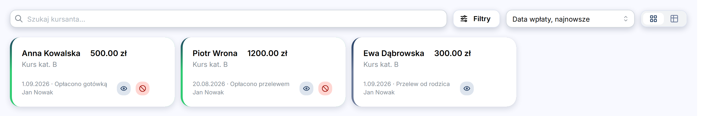
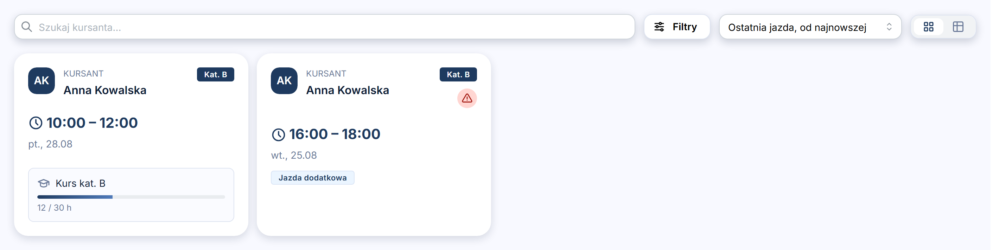
Kursant
Ustawienia szkoły
Długość slotu w grafiku, domyślny czas jazdy, cennik jazd dodatkowych, zasady odwołań, uprawnienia instruktorów i tematy jazd.
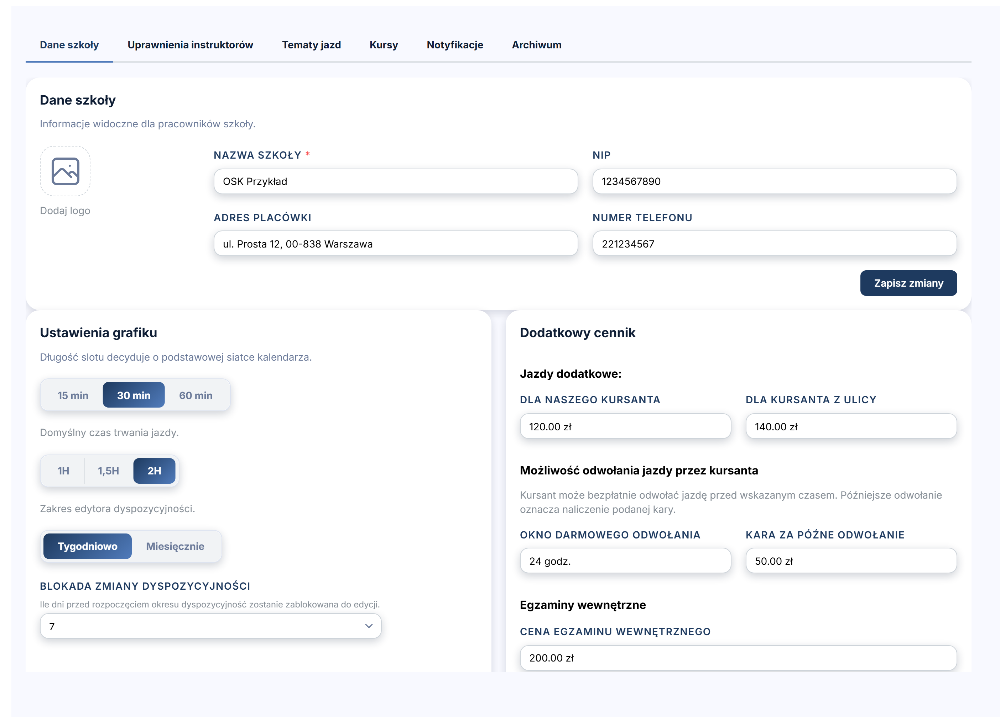
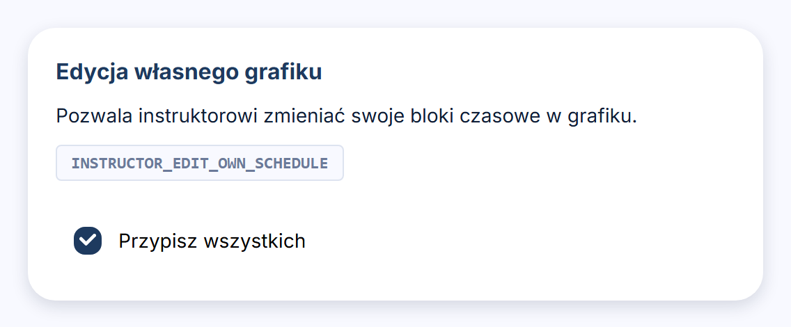
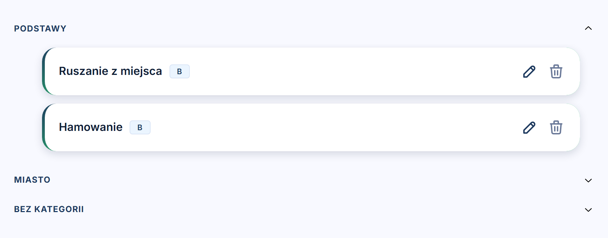
Grafik, kursanci, instruktorzy, flota i rozliczenia w jednej aplikacji, w przeglądarce i w telefonie.
Zaloguj się